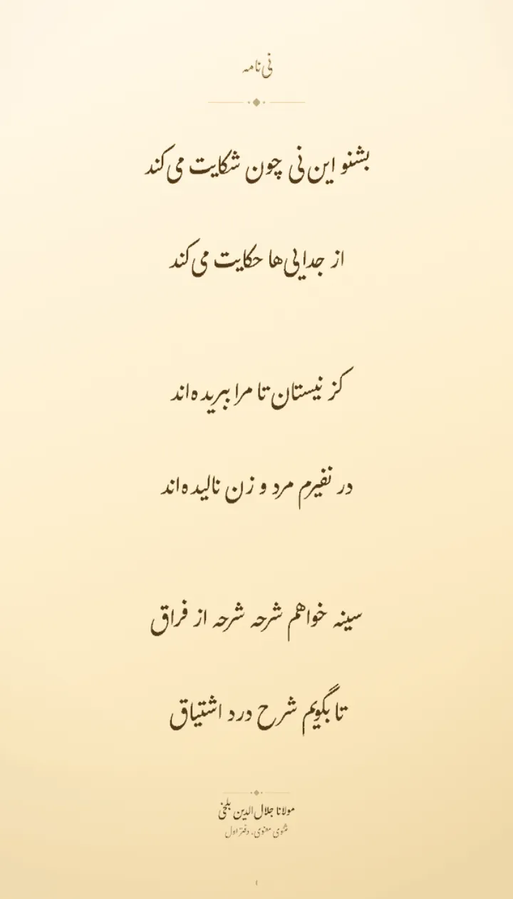
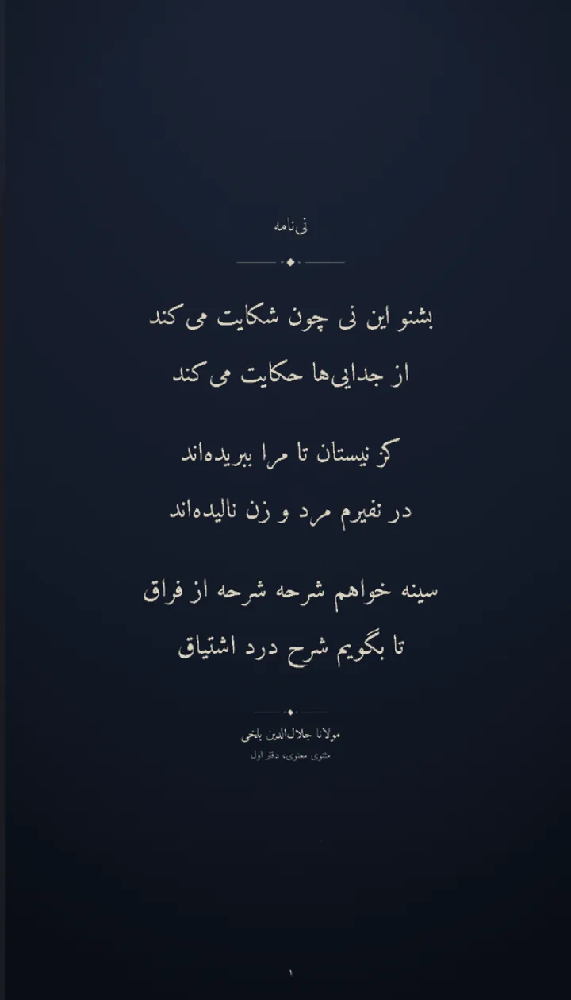
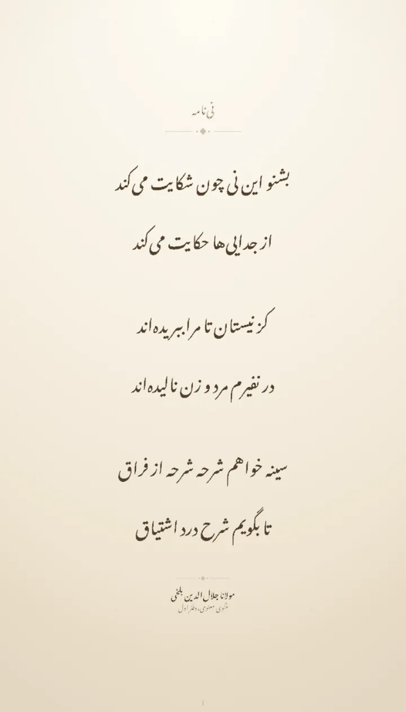
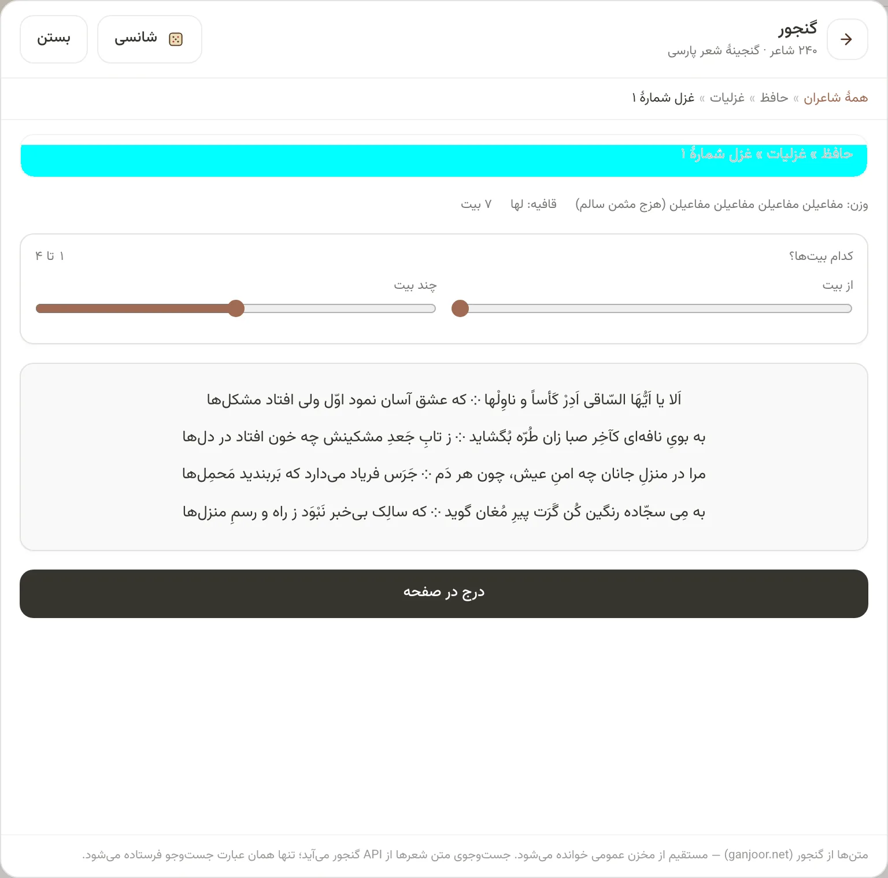
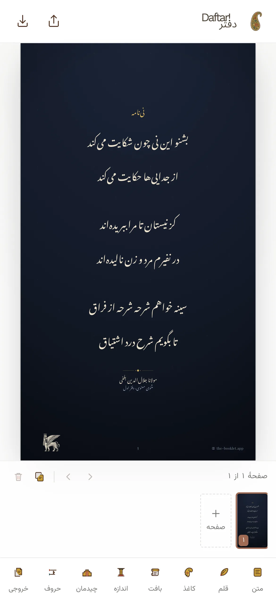
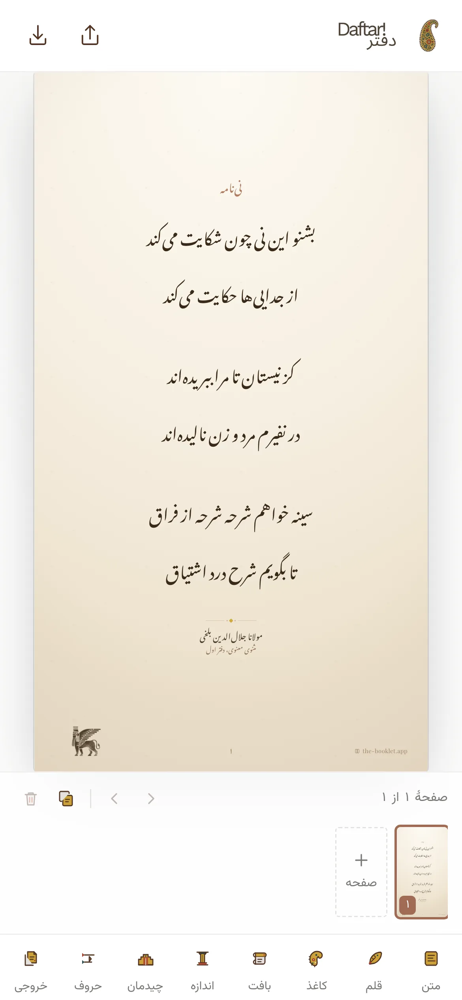
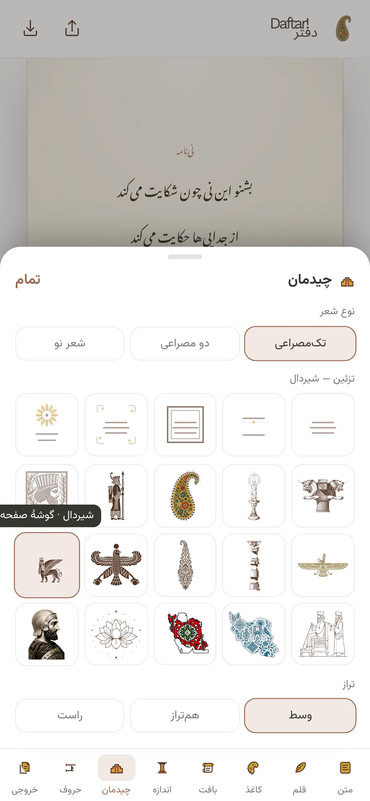
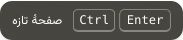
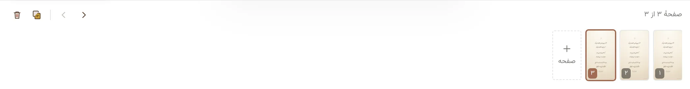
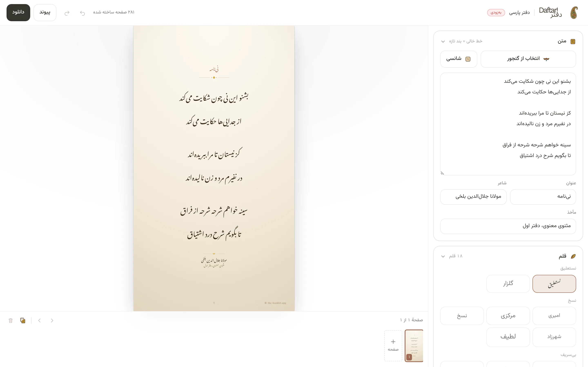

یک شعر، سه کاغذ، سه قلم
۱۳۲٬۰۰۰شعر
۲۳۴شاعر
گنجور، داخل خود اپ: بگرد، بیتها را جدا کن، درج کن

شانسی
یک شعر تصادفی، بیشتر از شاعران نامدار
۱۸ قلم فارسی، همه آزاد
- نستعلیق
- گلزار
- امیری
- نسخ
- شهرزاد
- میخک
- وزیر
- لالهزار
- کتیبه
- کوفی
- رقاص
۱۲ کاغذ
هر کدام با مرکب، تذهیب و کادر خودش
۲۰ تزئین ایرانی
شیردال، فروهر، سرو، بتهجقه، کوروش، سرستون…



موبایل، مثل iOS
نوار پایین، برگههای کشویی، همه با یک انگشت
بافت کاغذ
دانه، سایهٔ لبه، لکهٔ کهنگی، الیاف، تای میانی
عکس خودت، زیر کاغذ
بکش، بچسبان (Ctrl+V) یا انتخاب کن؛ در همین مرورگر میماند
واگرد، ازنو، میانبر

- واگردCtrlZ
- دانلودCtrlS
- گنجورCtrlK
- صفحهٔ تازهCtrlEnter
چند صفحه، یک زیپ
تا ۲۴ صفحه در یک دفتر؛ افزودن، تکثیر، جابهجایی، و دانلود همه با هم

۱۳ اندازهٔ خروجی، تا ۳ برابر
- استوری ۱۰۸۰×۱۹۲۰
- پست مربع ۱۰۸۰×۱۰۸۰
- پست عمودی ۴:۵
- پینترست
- لینکدین
- ایکس
- تلگرام
- A4 چاپی ۳۰۰dpi
- A5 چاپی
- پسزمینهٔ موبایل
- پسزمینهٔ دسکتاپ
نصب از مرورگر، آفلاین هم کار میکند
daftare-man.ir/#p=N4IgLg9g…
پیوندی که خودِ صفحه است
کل حالت در آدرس فشرده میشود؛ گیرنده همان صفحه را قابلویرایش باز میکند
۰ سرور
متن، صفحه و تصویر خروجی هرگز از مرورگر بیرون نمیروند. تنها استثنا: عبارتی که در جستوجوی گنجور مینویسی به گنجور فرستاده میشود.
روی دسکتاپ: پیشنمایش بزرگ، نوار کناری تاشو
هر گروه تنظیم را ببند تا فقط چیزی که لازم داری بماند. ابزارها راهنمای فوری دارند.

متنباز، MIT
React ۱۹ · Vite ۸ · Tailwind ۴. بدون بکاند. قلمها SIL OFL، شعرها از گنجور، کد MIT. fork کن، تغییر بده، بفروش.
ParsaBordbar/Daftar در گیتهاب
۱۸ قلم · ۱۲ کاغذ · ۲۰ تزئین · ۱۳ اندازه · ۲۴ صفحه